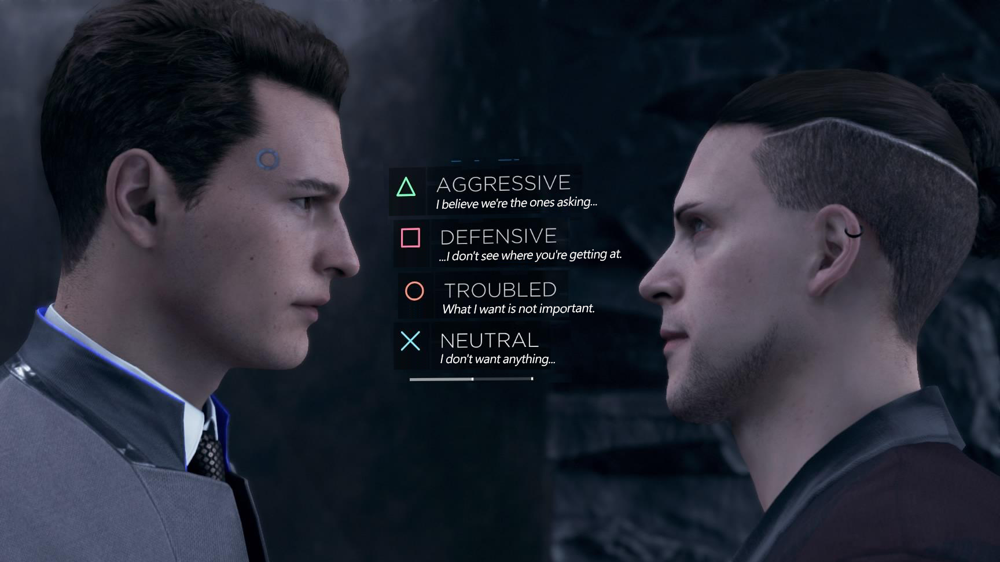
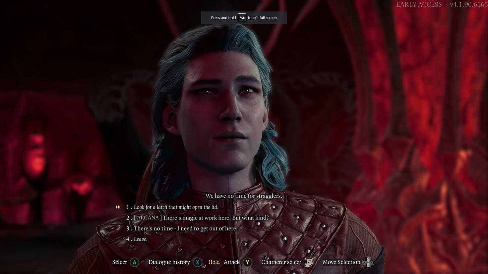
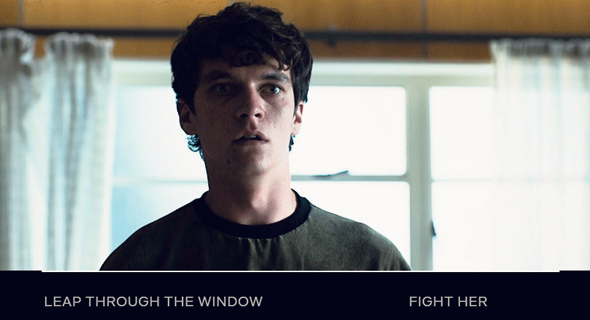
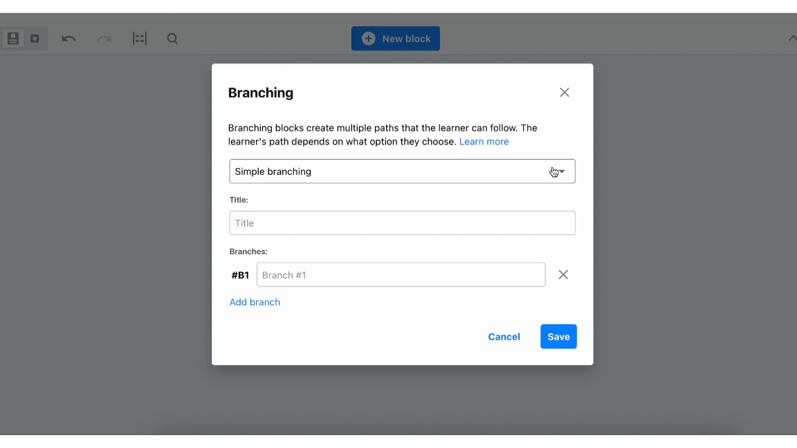
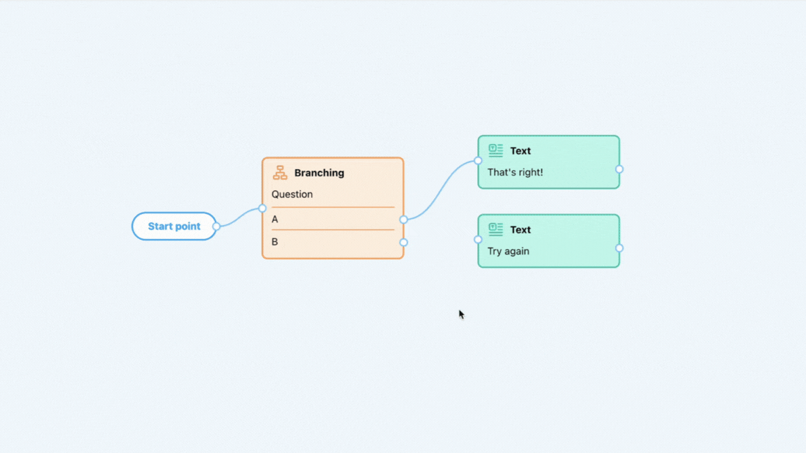
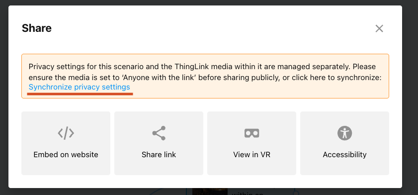

Learn about branching narratives
Watch how a choice changes a story. Then build a Two-Door Challenge: one start, option A, option B, and two different outcomes.
1. Bell ringer: control the video
Watch the chase. Try two choices. What changes when you choose differently? Open the video on YouTube to use its keyboard controls.
2. What is a branching narrative?
A story that changes when the player makes a choice. Linear: you follow one path. Branching: you choose between paths.



3. Watch how to build
Follow your teacher’s demo or the tutorial. The GIFs below show the current controls.
4. Do the Two-Door Challenge
Start → Door A or B → two different outcomes. Use text or media you already have.
- Scenarios → Create scenario → Create blank scenario. Give it a name.
- Add one Text block for the start and two Text blocks for the outcomes.
- Add Branching → Simple branching. Write a question and two choices: Door A / Door B. Save.

Connect: start point → opening scene → question → outcome A or B. Drag the circles to connect the blocks.

5. Test and submit
In Preview, test both doors from the start. Each must reach a different outcome.
Share → Share link → Copy

Test the link with a partner. In Canvas, choose Start Assignment → Website URL, paste the link, and submit. If sharing is unavailable, ask your teacher for the class fallback.
Canvas comment: Door ___ changes the outcome because ___.
Word bank: choice = a decision · outcome = what happens · branch = a path · scene = part of the story.
Aprende sobre historias con decisiones
Mira cómo una decisión cambia una historia. Después crea el reto de dos puertas: un inicio, opción A, opción B y dos resultados diferentes.
1. Para empezar: controla el video
Mira la persecución. Prueba dos decisiones. ¿Qué cambió cuando elegiste otra opción? Para usar el teclado, abre el video en YouTube.
2. ¿Qué es una historia con decisiones?
Una historia que cambia según lo que el jugador elige. Lineal: sigues un camino. Con decisiones: eliges entre caminos.
3. Mira cómo se construye
Sigue la demostración de tu maestro o el tutorial (en inglés). Los GIF de abajo muestran los controles actuales.
4. Haz el reto de dos puertas
Inicio → Puerta A o B → dos resultados diferentes. Usa texto o imágenes que ya tengas.
- Scenarios → Create scenario → Create blank scenario. Ponle un nombre.
- Añade un bloque Text para el inicio y dos bloques Text para los resultados.
- Añade Branching → Simple branching. Escribe una pregunta y dos opciones: Puerta A / Puerta B. Guarda.
Conecta: inicio → escena inicial → pregunta → resultado A o B. Arrastra los círculos para conectar los bloques.
5. Prueba y entrega
En Preview, prueba las dos puertas desde el inicio. Cada una debe llegar a un resultado diferente.
Share → Share link → Copy
Prueba el enlace con un compañero. En Canvas, elige Start Assignment → Website URL, pega el enlace y entrega. Si no puedes compartir, pide a tu maestro la alternativa de la clase.
Comentario: La puerta ___ cambia el resultado porque ___.
Banco de palabras: choice = decisión · outcome = resultado · branch = camino · scene = parte de la historia.